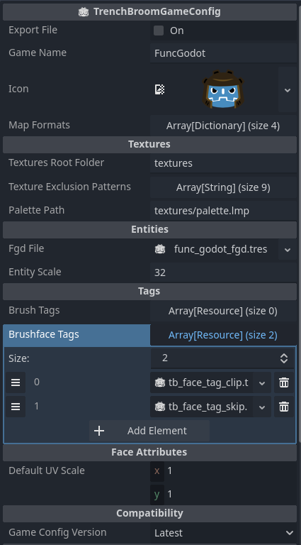

TrenchBroom Resources
TrenchBroom has the strongest support from FuncGodot, and as such is the recommended map editor for use with the plugin. FuncGodot has optional support for TrenchBroom Layers and Groups, and TrenchBroom supports multiple bit flag key value pairs. To aid with TrenchBroom support, FuncGodot offers two different resources.

Defines a game in TrenchBroom to express a set of entity definitions and editor behaviors.
| Property | Type | Description |
| Export File | Bool | Button to export / update this game's configuration in the TrenchBroom Game Config Folder. |
| Game Name | String | Name of the game in TrenchBroom's game list. |
| Icon | Texture2D | Icon for TrenchBroom's game list. |
| Map Formats | Array[Dictionary] | Available map formats when creating a new map in TrenchBroom. The order of elements in the array is the order TrenchBroom will list the available formats. The initialmap key value is optional. |
| Textures | ||
| Textures Root Folder | String | Path to top level textures folder relative to the game path. |
| Texture Exclusion Patterns | Array[String] | Textures with names matching these patterns will be hidden from TrenchBroom. Useful for hiding PBR maps and animation frames. |
| Palette Path | String | Palette path relative to your Game Path. Only needed for Quake WAD2 files. Half-Life WAD3 files contain the palettes within the texture information. |
| Entities | ||
| Fgd File | FuncGodotFGDFile | FGD resource to include with this game. If using multiple FGD resources, this should be the master FGD that contains them in the base_fgd_files resource array. |
| Entity Scale | String | Scale expression that modifies the default display scale of entities in TrenchBroom. See the TrenchBroom Documentation for more information. |
| Tags | ||
| Brush Tags | Array[Resource] | TrenchBroomTag resources that apply to brush entities. |
| Brushface Tags | Array[Resource] | TrenchBroomTag resources that apply to brush faces. |
| Face Attributes | ||
| Default Uv Scale | Vector2 | Default scale of textures on new brushes and when UV scale is reset. |
| Compatibility | ||
| Game Config Version | GameConfigVersion | Game configuration format compatible with the version of TrenchBroom being used. Only change if you're using an older version of TrenchBroom. |
TrenchBroomTag

Pattern matching tags to enable a number of features in TrenchBroom, including display appearance, menu filtering options, and keyboard shortcuts. This resource gets added to the TrenchBroomGameConfig resource. It does not affect appearance or functionality in Godot. See the TrenchBroom Documentation on Tags under the Game Configuration section for more information.
| Property | Type | Description |
| Tag Name | String | Name to define this tag. Not used as the matching pattern. |
| Tag Attributes | Array[String] | The attributes applied to matching faces or brush entities. Only "_transparent" is supported in TrenchBroom, which makes matching faces or brush entities transparent. |
| Tag Match Type | TagMatchType | Determines how the tag is matched. If set to TagMatchType.TEXTURE, the tag applies to any brush face with a texture matching the Texture Name. If set to TagMatchType.CLASSNAME, the tag applies to any brush entity with a classname matching the Tag Pattern. |
| Tag Pattern | String |
A string that filters which flag, param, or classname to use. * can be used as a wildcard to include multiple options. For example, a Tag Pattern of "trigger_*" with a TagMatchType Classname will apply this tag to all brush entities whose classnames begin with "trigger_". |
| Texture Name | String | A string that filters which textures recieve these attributes. Only used with a TagMatchType of Texture. |